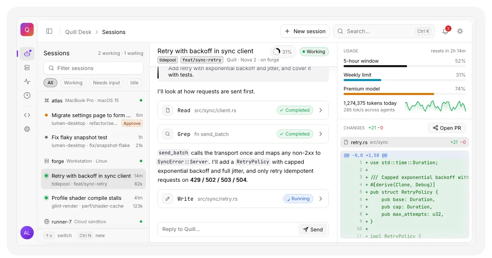
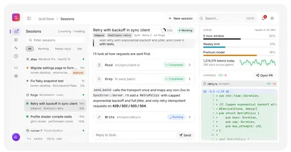
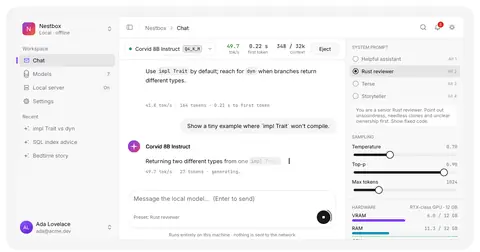
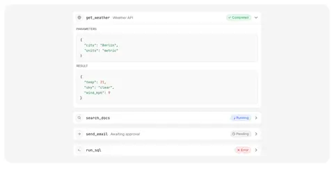
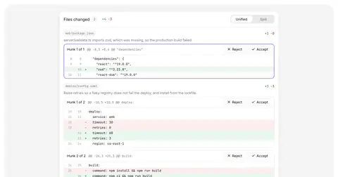
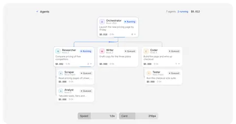
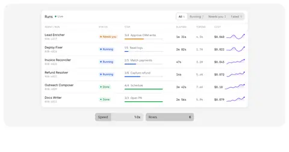

AI agent interfaces in Rust, native and fast
Session managers, local LLM chat, agent fleets and coding-agent supervisors are moving off Electron. glowkit gives them the interface layer: streaming Markdown chat, reasoning, tool calls, approvals, diff review, traces and run monitors, drawn natively with egui.

Why glowkit
Streams from real agents
glowkit-stream turns AG-UI, Vercel AI SDK, ACP, rig and async-openai streams into one event model. Tool-call arguments render while the JSON is still arriving.
Human in the loop
Approval cards, confirmation prompts, approval queues and error-recovery cards return the user's decision to your code, ready to send back to the agent.
Supervise many agents
Agent trees, fleet grids, run monitors and timelines, trace waterfalls, cost meters and context-window views for apps that watch more than one run.
Local models
A complete local LLM chat template with tokens per second, a model switcher and RAM, VRAM and GPU meters, plus an Ollama recipe in about 50 lines.
MCP and skills
MCP server lists with health, a skills browser, memory viewer and schedule list for agent management apps.
Small and native
One Rust binary for Windows, macOS and Linux, or a WebAssembly build. No Electron, no webview, no JavaScript runtime.
Best components

Agent Sessions
TemplatesSupervise coding-agent sessions across your machines: live / needs-input / idle states grouped by device, a streaming transcript with tool calls, a diff panel, an approve / deny bar, usage limits and a new-session composer (Ctrl+N, Enter / Esc).

Local LLM Chat
TemplatesA desktop front end for local models: streaming chat with live tokens/sec, context and first-token readouts, a model switcher that loads into VRAM (Ctrl+L), system-prompt presets (Alt+1..4), sampling sliders and RAM / VRAM / GPU meters.

AI Chat
AIA complete, working chat: type a message and a simulated assistant thinks, calls a tool, cites sources and streams a Markdown answer.

Tool Call
AIA card for function calls: tool name, status badge (pending, running with spinner, completed, error) and collapsible parameters and result.

Reasoning & Chain of Thought
AIA collapsible "Thinking…" block that shimmers while streaming and folds to "Thought for 4s", plus a step timeline with icons and connectors.

Approval Queue
AIPending tool calls to approve, deny or edit, with risk badges, the exact command, waiting time, batch actions and rows that resolve and fold away.

Diff Review
AIAn agent's file changes for review: unified or side-by-side diff, per-hunk accept and reject that fold the hunk, J/K/Y/N keys, and an apply footer.

Trace Waterfall
AIA run's trace as a waterfall: summary strip, folding span tree, bars by kind on a time axis with duration and cost, the slowest call tagged, a live now-line and hover details.

Agent Tree
AIAn orchestrator and its sub-agents as a live tree of cards: status, model, task, cost and time on each, lights running along connectors to working agents, branches that fold.

Run Monitor
AILive agent runs in one table: filter tabs with rolling counts, status, step progress, ticking elapsed time, tokens and a cost sparkline; rows glide as runs change state.

Context Window
AIWhat fills the model's context: a stacked bar by source with the auto-compact mark and a field of cells; hover a source to light it up, watch compaction squeeze the chat.

MCP Server List
AIMCP servers with connect status, transport, tool counts, latency bars and switches; switching one on plays a handshake, rows unfold to their tools.
Render a live agent thread
Add glowkit and glowkit-stream, connect an adapter, and let AgentThread draw the conversation. The recipes below are complete apps.
cargo add glowkit eframe
cargo add glowkit-stream --features "egui http"use glowkit::prelude::*;
use glowkit_stream::{AgentThread, Session};
// Your agent runs anywhere: a tokio task, a thread, another process.
// Its adapter (AG-UI, Vercel AI SDK, ACP, rig, async-openai) sends events.
rx.drain_into(&mut session);
// One call renders the whole thread: streaming Markdown, reasoning,
// tool calls with live arguments, plans, sources and errors.
let out = AgentThread::new(&mut session).show(ui);
for decision in out.decisions {
// the user approved or denied a tool call: send it back to the agent
}Recipes: connect your agent
Local LLM chat with Ollama
Talks to Ollama, vLLM, LM Studio, OpenRouter.
A rig agent UI
Talks to a rig agent in your process.
A desktop front-end for an AG-UI agent
Talks to LangGraph, CrewAI, Mastra, Pydantic AI, ADK.
A native client for a Vercel AI SDK backend
Talks to any toUIMessageStreamResponse() route.
An ACP coding-agent viewer
Talks to Agent Client Protocol agents.
Make your Rust app glow
Open source, MIT or Apache-2.0. One cargo add away.